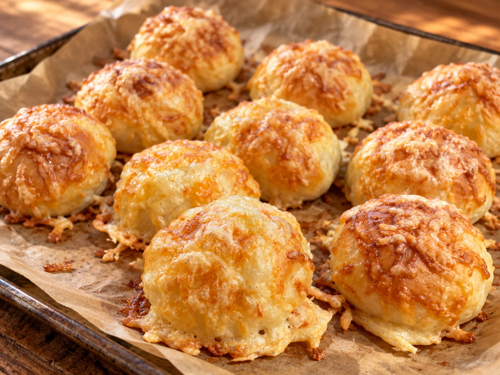

Was Kleines dazu · Brot, Buns & Teiggebäck
Käsebrötchen
Von Mama R.

Fluffige, selbst gemachte Brötchen mit einer herzhaften Käsekruste – frisch aus dem Ofen schmecken sie besonders gut.
Zutaten
320 mlMilch, lauwarm
½ WürfelFrische Hefe
1 ELZucker
100 mlNeutrales Speiseöl
½ ELSalz
Ca. 500 gMehl
1Ei
2 ELMilch
1 PriseSalz
Nach BedarfGeriebener Käse
Zubereitung
- Die lauwarme Milch mit Hefe und Zucker verrühren und etwa 5 Minuten stehen lassen, bis sich die Hefe gelöst hat.
- Öl, Salz und zunächst etwa 450 g Mehl dazugeben. Alles mindestens 3 Minuten zu einem glatten, weichen Hefeteig kneten. Nur so viel vom restlichen Mehl einarbeiten, bis sich der Teig gut von der Schüssel löst.
- Den Teig abgedeckt an einem warmen Ort etwa 60 Minuten gehen lassen, bis er sein Volumen deutlich vergrößert hat.
- Den Teig in 10–12 gleich große Portionen teilen, zu runden Brötchen formen und mit etwas Abstand auf ein mit Backpapier belegtes Blech setzen. Noch einmal 20–30 Minuten abgedeckt gehen lassen.
- Den Backofen auf 200 °C Ober-/Unterhitze vorheizen. Ei, 2 EL Milch und eine Prise Salz verquirlen. Die Brötchen damit bestreichen und großzügig mit geriebenem Käse bestreuen.
- Die Käsebrötchen auf mittlerer Schiene etwa 15 Minuten goldbraun backen und anschließend kurz auf einem Gitter abkühlen lassen.
Tipp
Gouda oder Emmentaler schmelzen besonders schön. Für eine kräftigere Käsekruste kannst du beide Sorten miteinander mischen.